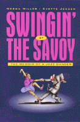

A celebration of a life of dancing the Lindy Hop
A celebration of a life of dancing the Lindy Hop


 A celebration of a life of dancing the Lindy Hop
A celebration of a life of dancing the Lindy Hop

|  |
Swingin' at the SavoyThe Memoir of a Jazz DancerNorma Miller with Evette Jensenpaper EAN: 978-1-56639-849-7 (ISBN: 1-56639-849-5) |
Norma Miller is a recipient of the National Endowment for the Arts National Heritage Fellowships, 2003
"This is an important book, bringing some much-overdue attention to the swing dancers who along with the musicians defined the era."
—Robert Tate, Jazz Now
Dancer, award-winning choreographer, show producer, stand-up comedienne, TV/film actress and author, Norma Miller shares her touching historical memoir of Harlem's legendary Savoy Ballroom and the phenomenal music and dance craze that "spread the power of Swing across the world like Wildfire."
It was a time when the music was Swing, and Harlem was king. Renowned as 'the world's most beautiful ballroom" and the largest, most elegant in Harlem, the Savoy was the only ballroom not segregated when it opened in 1926. The Savoy hosted the best bands and attracted the best dancers by offering the challenge of fierce competition. White people traveled uptown to learn exciting new dance styles. A dance contest winner by fourteen, Norma Miller became a member of Herbert White's world-famous Lindy Hoppers and a celebrated Savoy Ballroom Lindy Hop champion.
Swingin' at the Savoy chronicles a significant period in American cultural history and race relations, as it glorifies the popularized home of the Lindy Hop, and the birthplace of such memorable dance fads as the Big Apple, Shag, Truckin', Peckin', Susie Q, Charleston, Peabody, Black Bottom, Cake Walk, Boogie Woogie, Shimmy, and tap dancing.
Miller shares fascinating anecdotes about her youthful encounters with many of the greatest jazz legends in music history including Ella Fitzgerald, Count Basie, Benny Goodman, Billie Holiday, Artie Shaw, Duke Ellington, Ethel Waters, and even boxer Joe Louis.
Excerpt available at www.temple.edu/tempress
"A refreshing look at the history of swing dancing is Swingin' at the Savoy.... Miller has not only created an entertaining history of swing, but more importantly, gives the reader a sense of the personalities of people and places most have only heard of. The book is unique as a humorous autobiography, full of youthful antics and charm. Delightful anecdotes and photos of big bands give us a view of swing music and its popularity in a real world aspect different than most music historians today."
—Lance Benishek, Dancing USA
Acknowledgments
Preface – Ernie Smith
1. Coming Home
2. Coming to America
3. Norman Miller
4. The Early Years
5. The Savoy
6. Coming of Age
7. A Man Called Whitey
8. The Harvest Moon Ball
9. The Swingin’ Generation
10. The Other Side of the Ballroom
11. Ethel Waters
12. Savoy at the World’s Fair
13. Hollywood Calls
14. Swingin’ Down to Rio
15. Moving On
16. Norma Miller Dancers
17. On the Road Again
18. Swingin’ into the Future
19. Saying Goodbye
Epilogue – Robert P. Crease
 | Norma Miller began her career as a choreographer by forming the Norma Miller Jazz Dancers and appeared in Olsen and Johnson's Broadway stage production of Hellzapoppin for five years. Her film credits include A Day at the Races, Malcolm X, and Captiva, and she has toured internationally including an extensive tour in Vietnam during the war. She has performed stand-up comedy on Vegas stages for years and enjoyed a ten-year working relationship with Redd Foxx, during which time she made numerous TV appearances on his network show. In 1992 Miller was nominated for an Emmy for her choreography in the CBS movie of the week, Stompin' at the Savoy, and has also been the subject of many documentaries, including National Geographic's television program "Explorer" and the Smithsonian Jazz series on national radio. |
Evette Jensen met Norma Miller in 1992 while working as a producer associate in Las Vegas and jumped at the chance to help, sorting through interviews, stories, pictures, and other memorabilia that became this book. Jensen lives in Las Vegas where she sells real estate and works as a freelance writer.
African American Studies
Music and Dance
Biography/Memoir/Autobiography
© 2015 Temple University. All Rights Reserved. This page: http://www.temple.edu/tempress/titles/1214_reg.html.